How you quantify your model effects varies with your model structure (e.g. error distribution assumption).
If it is your first time reading this, read through the examples that present models assuming a normal error distribution assumption. This will help you understand why we are reporting modelled effects in this way. Then, (if relevant) look at the section on the error distribution assumption you are interested in for your model.
In this section, you will learn how to report your modelled effects directly - the change in your response given a unit change in your predictor. These effects are quantified in the estimates of your coefficients (i.e. the magnitude, direction and uncertainty of your coefficient estimates).
How you report your modelled effects will depend on:
whether you are reporting effects for a categorical or numeric predictor, and
your error distribution assumption
We will consider each of these now:
1 Reporting your effects for categorical vs. numeric predictors
1.1 Effects of categorical predictors on your response
Effects are the change in your response due to a unit change in your predictor.
For categorical predictors, the effect is the change in the response when you change the level (category) of your categorical predictor.
You capture the effect of your categorical predictor on your response by reporting the modelled value of the response at each level (category) of your predictor.1
You also report the uncertainty around this modelled estimate. Two common uncertainty estimates are
standard errors (SE) which are a measure of uncertainty of the average modelled effect, and
the 95% confidence intervals around your modelled effects, which tell you the range your modelled effects would be expected to fall into (with a 95% probability) if you redid your experiment.
We will focus on the 95% confidence intervals as they tend to be easier to interpret for many different types of models.
When you have a categorical predictor with more than two categories (levels), you will also want to test to see where the effects on the response differ among the categories. This is done using multiple comparison testing, i.e. you will compare the modelled effect on your response of each level of your categorical predictor vs. every other level of your categorical predictor to determine which effects are different from each other (called pairwise testing).
This is done by testing the null hypothesis that the modelled effects of each pair of category levels are similar to one another, typically rejecting the null hypothesis when P < 0.05. Remember that the P-value is the probability that you observe a value at least as big as the one you observed even though your null hypothesis is true. In this case, you are looking at the value you are observing as the difference between coefficients estimated for the two levels of your predictor. The P-value is the probability of getting a difference at least as big as the one you observed even though there is actually no difference between the effects (i.e. the null hypothesis is true).
A few of things to note about multiple comparison testing:
Multiple comparison testing is only needed for categorical predictors.
Multiple comparison testing is only needed for categorical predictors with more than two levels (or categories).
Multiple comparison testing should only be done after your hypothesis testing has given you evidence that the predictor has an effect on your response. That is, you should only do a multiple comparison test on a predictor if that predictor is in your best-specified model. As this is a test done after your hypothesis testing, it is called a post-hoc2 test.
Multiple comparison testing can be a problem because you are essentially repeating a hypothesis test many times on the same data (i.e. are the effects of Sp1 different than those of Sp2? are the effects of Sp1 different than those of Sp3? are the effects of Sp2 different than those of Sp3?…). These repeated tests mean there is a high chance that you will find a difference in one test purely due to random chance, vs. due to there being an actual difference. The multiple comparison tests you will perform have been formulated to correct for this increased error.
In summary: reporting effects of categorical predictors on your response means reporting:
the modelled value of the response at each predictor level,
the uncertainty of this modelled value (95% confidence interval), and
the evidence that the effects among levels are different from one another.
1.2 Effects of numeric predictors on your response
Effects are the change in your response due to a unit change in your predictor.
For numeric predictors, the effect is the change in the response when you increase your numeric predictor by one unit.
You capture the effect of your numeric predictor on your response by reporting this rate of change as a slope. When the slope (coefficient) is positive, you have an increase in your response with a unit increase in your predictor. When the slope (coefficient) is negative, you have a decrease in your response with a unit increase in your predictor. When the slope (coefficient) is zero, you have no change in your response for a unit increase in your predictor, and you would conclude that there is no evidence that your predictor explains variability in your response.
1.3 Effects of interactions between numeric and categorical predictors
Your best-specified model might also include an interaction term. For example, you might have an interaction between categorical and numeric predictors. To report the effect of an interaction, you report the effect of the numeric predictor for each level in your categorical predictor. See Example 4 below for how to do this.
2 Report your effects after considering your error distribution assumption
When you use a GLM to test your hypothesis, the coefficients are estimated in the “linked world”. You need to convert these back to the response (real) world in order to communicate your effects.
This is because of the difference between the “link” scale and “response” scale for generalized linear models.
The link scale is where the model fitting happens, and where the evidence for your modelled effects is gathered.
The response scale is back in the real world - these are the actual effects in your response you would expect to see with a change in your predictor.
How you do the conversion to interpret your coefficients depends on your specific error distribution assumption as you need to consider the link function in your model.
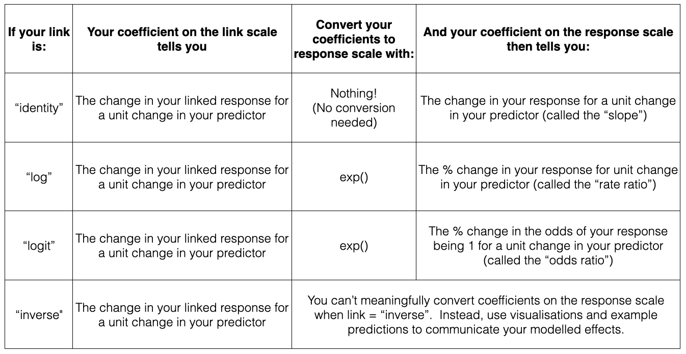
For models with a normal error distribution assumption
For a normal error distribution assumption, the effect of a numeric predictor on the response is the absolute change in the response for a unit change in the predictor.
If you have a normal error distribution assumption (and are using link = "identity"), your coefficient on the response scale is identical to your coefficient on the link scale.
the math
Here’s a model equation for a generalized linear model:
\(\mu_i\) is the mean fitted value \(\mu_i\) dependent on \(Pred_i\)
\(\beta_1\) is the coefficient of \(Pred_i\)
\(Pred_i\) is the value of your predictor
\(\beta_0\) is the intercept
\(Resp_i\) is the value of the response variable
\(F\) represents some error distribution assumption
As above, the effect of a numeric predictor on your response is the change in your fitted value (\(g(\mu_i)\)) for a unit change in your predictor (\(Pred_i\)):
\[
\begin{align}
g(\mu|Pred+1) - g(\mu|Pred) &= (\beta_1 \cdot (Pred+1) + \beta_0) - (\beta_1 \cdot Pred_i + \beta_0) \\
&=\beta_1 \cdot Pred + \beta_1 + \beta_0 - \beta_1 \cdot Pred_i - \beta_0 \\
&=\beta_1
\end{align}
\] For linear models with a normal error distribution assumption (i.e. when you are using link = "identity"), the link function \(g()\) is not there. For this reason, you can read the effects of your model directly from the model coefficients (\(\beta_1\), \(\beta_0\)) when you have a normal error distribution assumption. And for this reason, you will need to convert your model coefficients to quantify your modelled effects when you have an error distribution assumption that is not normal/uses a link function that is not “identity” (see next section).
Examples with a normal error distribution assumption:
Example 1: Resp1 ~ Cat1 + 1
Example 1: Resp1 ~ Cat1 + 1
Recall that Example 1 contains only one predictor and it is categorical:
Resp1 ~ Cat1 + 1
What are your modelled effects (with uncertainty)?
In the chapter on your Starting Model, you found your coefficients in the “Estimate” column of the summary() output of your model:
coef(summary(bestMod1)) # extract the coefficients from summary()
Interpreting the coefficients from this output takes practice - especially for categorical predictors because of the way that R treats categorical predictors in regression. With R’s “dummy coding”, one level of the predictor (here Sp1) is incorporated into the intercept estimate (21) as the reference level. The other coefficients in the Estimate column represent the change in modelled response when you move from the reference level (Sp1) to another level.
The modelled response when Cat1 = Sp2 is 5.9 units higher than this reference level, or 21 + 5.9 = 26.9 units.
The modelled Resp1 when Cat1 = Sp3 is -4.5 units lower than the reference level, or 21 -4.5 = 16.5 units.3
So all the information we need is in this summary() output, but not easy to see immediately. An easier way is to use the emmeans4 package which helps you by reporting the coefficients directly5. In our case, you use the emmeans package to get the mean value of the response at each level of the predictor. For categorical predictors, you do this with the emmeans() function:
library(emmeans) # load the emmeans packageemmOut <-emmeans(object = bestMod1, # your modelspecs =~ Cat1, # your predictorstype ="response") # report coefficients on the response scaleemmOut
So now you have a modelled value of your response for each level of your categorical predictor - this captures the effect of your categorical predictor on your response. You also need to report uncertainty around this effect, and you can do this by reporting the 95% confidence level (CL) also reported by the emmeans() function.
When Cat1 is Sp1, Resp1 is estimated to be 21 units (95% confidence level: 18.3 to 23.6 units).
When Cat1 is Sp2, Resp1 is estimated to be 26.8 units (95% confidence level: 24.5 to 29.2 units).
When Cat1 is Sp3, Resp1 is estimated to be 16.4 units (95% confidence level: 13.8 to 19.1 units.
Note that this is the same information in the summary() output just easier to read.6
Note also that two types of uncertainty are measured here. SE stands for the standard error around the prediction, and is a measure of uncertainty of the average modelled effect. The lower.CL and upper.CL represent the 95% confidence limits of the prediction - so if I observed a new Resp1 at a particular Cat1, there would be a 95% chance it would lie between the bounds of the confidence limits.
Finally, note that you can also get a quick plot of the effects by handing the emmeans() output to plot().
Are the modelled effects different than one another across categorical levels? (only needed for categorical predictors with more than two levels)
Multiple comparison testing is quick to do with the emmeans package. It just requires you to hand the output from emmeans() to a function called pairs():
contrast estimate SE df t.ratio p.value
Sp1 - Sp2 -5.88 1.77 97 -3.313 0.0019
Sp1 - Sp3 4.51 1.86 97 2.423 0.0173
Sp2 - Sp3 10.39 1.77 97 5.856 <0.0001
P value adjustment: fdr method for 3 tests
The output shows the results of the multiple comparison (pairwise) testing. The values in the p.value column tell you the results of the hypothesis test comparing the coefficients between the two levels of your categorical predictor. For example, for Sp1 vs. Sp2, there is a 0.19% (p = 0.0019) probability of getting a difference in coefficients at least as big as 26.8 - 21 = 5.8 even though the null hypothesis (no difference) is true. This value 0.19% (P = 0.0019) is small enough that you can say you have evidence that the effect of Cat1 on Resp1 is different for these two different levels (Sp1 and Sp2).
Based on a threshold p-value of 0.05, you can see that:
There is evidence that the value of Resp1 when Cat1 is Sp1 is different (lower) than that when Cat1 is Sp2 as P = 0.0019 is less than P = 0.05.
There is evidence that the value of Resp1 when Cat1 is Sp1 is different (higher) than that when Cat1 is Sp3 as P = 0.0173 is less than P = 0.05.
There is evidence that the value of Resp1 when Cat1 is Sp2 is different (higher) than that when Cat1 is Sp3 as P < 0.00017 is smaller than P = 0.05.8.
Note that the p-values have been adjusted via the “false discovery rate” (fdr) method (Verhoeven, Simonsen, and McIntyre 2005) which adjusts the difference that the two coefficients need to have to allow for the fact that we are making multiple comparisons.9
Note that you can also get the results from the pairwise testing visually by handing the output of pairs() to plot().
Example 2: Resp2 ~ Cat2 + Cat3 + Cat2:Cat3 + 1
Example 2: Resp2 ~ Cat2 + Cat3 + Cat2:Cat3 + 1
Recall that Example 2 contains two predictors and both are categorical:
Resp2 ~ Cat2 + Cat3 + Cat2:Cat3 + 1
What are your modelled effects (with uncertainty)?
Again, for categorical predictors, there is a coefficient estimated for each level of the predictor. If there is one or more interactions among predictors, there will be one coefficient for each combination of levels among predictors. Let’s look at the summary() output of your model to understand better:
coef(summary(bestMod2)) # extract the coefficients from summary()
Comparing this output to that of Example 1 shows many more estimated coefficients for Example 2. This is because we have one coefficient for each level of each predictor, as well as coefficients for each combination (the interaction term) of levels of the predictors.
Again, it takes a little practice to read the coefficients from the summary() output. For Example 2:
The modelled prediction for Resp2 when Cat2 is TypeA and Cat3 is Treat1 is 365 units (the intercept).
The modelled prediction for Resp2 when Cat2 is TypeB and Cat3 is Treat1 is 365 + 37 = 402 units.
The modelled prediction for Resp2 when Cat2 is TypeA and Cat3 is Treat2 is 365 - 44 = 321 units.
The modelled prediction for Resp2 when Cat2 is TypeC and Cat3 is Treat2 is 365 - 76 - 44 + 74 = 319 units.
As above, we can use the emmeans package to more easily see these coefficients:
emmOut <-emmeans(object = bestMod2, # your modelspecs =~ Cat2 + Cat3 + Cat2:Cat3, # your predictorstype ="response") # report coefficients on the response scaleemmOut
This is a hard table to navigate as every possible combination of the levels across predictors is compared. This may not be what you want. Instead, you can look for differences of one predictor based on a value of another. For example:
forComp <-pairs(emmOut, # emmeans outputadjust ='fdr', # multiple comparison adjustmentsimple ="Cat2") # contrasts within this categorical predictorforComp
Here you can more easily see the contrasts, and the adjustment to the P-value will be limited to what you actually need. Based on a threshold P-value of 0.05, you can see that the effects at some combinations of your predictors are not statistically different from each other.
For example, the coefficient (predicted Resp2) when Cat3 = Treat1 and Cat2 = TypeA is 365 and this is 37 lower than the coefficient when Cat3 = Treat1 and Cat2 = TypeB, but there is no evidence that the difference has any meaning as P = 0.26 for this comparison.
On the other hand, some combinations of your predictors are statistically different from each other. For example, a comparison of modelled Resp2 when Cat3 = Control and Cat2 = TypeB (548) vs. Cat3 = Control and Cat2 = TypeD (215) shows that they differ by 332 and that there is strong evidence that this difference is meaningful as P < 0.0001.
Note that you could also organize this with contrasts by Cat3 instead:
forComp <-pairs(emmOut, # emmeans outputadjust ='fdr', # multiple comparison adjustmentsimple ="Cat3") # contrasts within this categorical predictorforComp
Cat2 = TypeA:
contrast estimate SE df t.ratio p.value
Treat1 - Treat2 43.630 36.4 88 1.198 0.2341
Treat1 - Control -64.116 30.3 88 -2.116 0.0557
Treat2 - Control -107.745 31.9 88 -3.374 0.0033
Cat2 = TypeB:
contrast estimate SE df t.ratio p.value
Treat1 - Treat2 0.921 39.3 88 0.023 0.9814
Treat1 - Control -145.366 30.9 88 -4.711 <0.0001
Treat2 - Control -146.287 39.3 88 -3.719 0.0005
Cat2 = TypeC:
contrast estimate SE df t.ratio p.value
Treat1 - Treat2 -29.979 40.1 88 -0.748 0.6799
Treat1 - Control -45.038 28.1 88 -1.605 0.3363
Treat2 - Control -15.060 36.4 88 -0.414 0.6799
Cat2 = TypeD:
contrast estimate SE df t.ratio p.value
Treat1 - Treat2 -22.391 41.4 88 -0.541 0.8276
Treat1 - Control 7.609 34.8 88 0.218 0.8276
Treat2 - Control 30.000 34.8 88 0.861 0.8276
P value adjustment: fdr method for 3 tests
Note that you can also get the results from the pairwise testing visually by handing the output of pairs() to plot().
Example 3: Resp3 ~ Num4 + 1
Example 3: Resp3 ~ Num4 + 1
Recall that Example 3 contains one predictor and the predictor is numeric:
Resp3 ~ Num4 + 1
For a numeric predictor, the effect is captured in the coefficient that describes the change in the response for a unit change in the numeric predictor.
For models with a normal error distribution assumption, this is communicated as the slope.
Let’s look at the summary() output for Example 3:
coef(summary(bestMod3)) # extract the coefficients from summary()
Estimate Std. Error t value Pr(>|t|)
(Intercept) -226.9131 166.09360 -1.366176 1.750105e-01
Num4 260.0574 14.56593 17.853818 1.438227e-32
This tells you that for a unit change in Num4, you get a 260 ± 1510 change in Resp3.
Note that this same information can be found using the emmeans package. Because Num4 is a numeric predictor, you use the emtrends() function from the emmeans package, which also provides the 95% confidence interval on the estimate:
library(emmeans) # load the emmeans packagetrendsOut <-emtrends(bestMod3, # your modelspecs =~ Num4 +1, # your predictorsvar ="Num4") # your numeric predictorstrendsOut
Recall that Example 4 contains two predictors, one is categorical and one is numeric:
Resp4 ~ Cat5 + Num6 + Cat5:Num6 + 1
What are your modelled effects (with uncertainty)?
The effects estimated for this model will include values of the response (Resp4) at each level of the categorical predictor (Cat5) as well as slopes describing the change in the response when the numeric predictor (Num6) changes, and a different slope will be estimated for each level in Cat5 (this is because of the interaction in the model).
As above, you can take a look at your modelled coefficients with the summary() output:
The model prediction of Resp4 when Cat5 is Farm and Num6 is 0 is 98.34 units11 (the intercept).
The model prediction of Resp4 when Cat5 is Urban and Num6 is 0 is 98.34 - 0.24 = 98.1 units.
The model prediction of Resp4 when Cat5 is Wild and Num6 is 0 is 98.34 - 0.87 = 97.5 units.
The slope of the relationship between Num6 and Resp4 when Cat5 is Farm is -0.0029.12
The slope of the relationship between Num6 and Resp4 when Cat5 is Urban is -0.0029 + 0.015 = 0.0121.
The slope of the relationship between Num6 and Resp4 when Cat5 is Wild is -0.0029 + 0.031 = 0.0281.
Again, interpreting the coefficients from the summary() output is tedious and not necessary: You can use the emmeans package to give you the modelled response for each level of the categorical predictor (Cat5) directly:
emmOut <-emmeans(object = bestMod4, # your modelspecs =~ Cat5 + Num6 + Cat5:Num6 +1, # your predictorstype ="response") # report coefficients on the response scaleemmOut
Note that emmeans() sets our numeric predictor (Num6) to the mean value of Num6 (510 units). We can also control this with the at = argument:
emmOut <-emmeans(object = bestMod4, # your modelspecs =~ Cat5 + Num6 + Cat5:Num6 +1, # your predictorstype ="response", # report coefficients on the response scaleat =list(Num6 =0)) # control the value of your numeric predictor at which to make the coefficient estimatesemmOut
By setting at = 0, you get the intercept - i.e. the modelled Resp4 when Num6 = 0 for each level of Cat5, and this is what is reported in the summary() output.
Similarly, you can get the emmeans package to give you the slope coefficients for the numeric predictor (Num6) using the emtrends() function, rather than interpreting them from the summary() output:
trendsOut <-emtrends(bestMod4, # your modelspecs =~ Cat5 + Num6 + Cat5:Num6 +1, # your predictorsvar ="Num6") # your numeric predictorstrendsOut
there is no evidence of an effect on Resp4 of Num6 when Cat5 = Farm (P = 0.44).
there is evidence for a positive effect of Num6 on Resp4 when Cat5 = Urban (P = 0.0045). The effect is 0.01213 with a 95% confidence interval of 0.0039 - 0.020514.
there is evidence for a positive effect of Num6 on Resp4 when Cat5 = Wild (P < 0.0001). The effect is 0.02815 with a 95% confidence interval of 0.0182 - 0.037716.
Are the modelled effects different than one another across categorical levels? (only needed for categorical predictors with more than two levels)
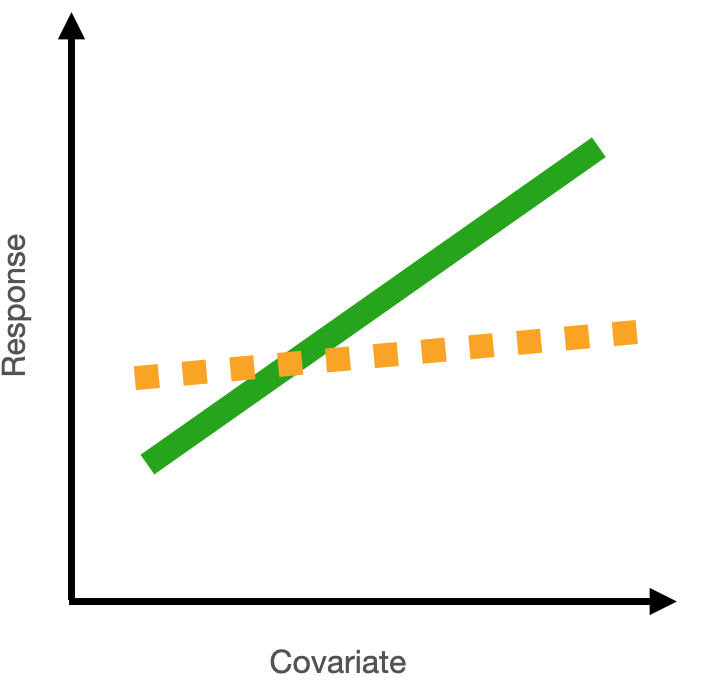
Since you have a categorical predictor with more than two levels, you will want to report where the effects among levels differ from one another.
Note that the effects in Example 4 include slope coefficients (associated with the numeric predictor) and intercept coefficients (associated with the categorical predictor). Because the slope and intercept are dependent on one another (when the slope changes, the intercept will naturally change), you need to first check if the slope coefficients vary across your categorical levels. Only if they DO NOT vary (i.e. the modelled effects produce lines that are parallel across your categorical levels) would you go on to test if the intercepts vary across your categorical levels.
You can find out which slopes (i.e. the effect of Num6 on Resp4) are different across the levels of Cat5 using emtrends() with a request for pairwise testing:
forCompSlope <-pairs(trendsOut, # emmeans objectadjust ="fdr", # multiple comparison adjustmentsimple ="Cat5") # contrasts within this categorical predictorforCompSlope
Here you see that the slope estimates (the effect of Num6 on Resp4) for all levels of Cat5 are significantly different from one another (0.0001 ≤ P ≤ 0.017).
Note that you can also get the results from the pairwise testing visually by handing the output of pairs() to plot().
Again: only if all the slopes were similar, would you want to test if the levels of your categorical predictor (Cat4) have significantly different coefficients (intercepts) from each other. You would do this with pairs() on the output from emmeans() (the emmOut object).
For models with a poisson error distribution assumption
For a poisson error distribution assumption, the effect of a numeric predictor on the response is the percent change in the response for a unit change in the predictor.
The default (canonical) link function for models with a poisson error distribution assumption is the natural logarithm or link = "log".
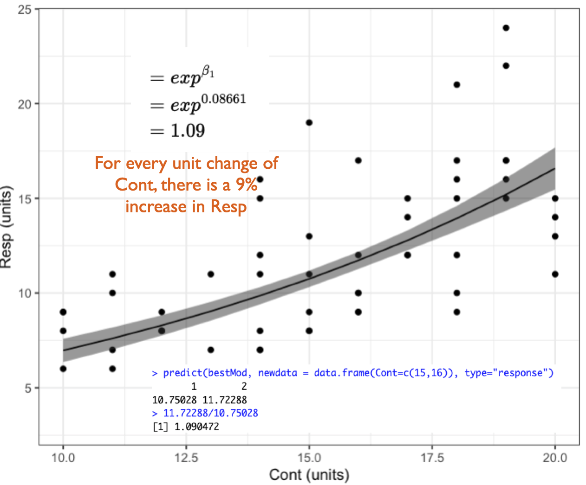
If you are using link = "log" (as with a poisson error distribution, and sometimes also a Gamma error distribution - see below), you get your coefficient on the response scale by taking e to the coefficient on the link scale (with the R function exp()). This coefficient is called the rate ratio (RR)17 and it tells you the percent (%) change in the response for a unit change in your predictor.
the math
But why do we convert coefficients from the link to response scale with \(e^x\)18 when link = "log"?
A reminder that we can present our linear model like this:
Examples with a poisson error distribution assumption:
Here we have made new examples where the error distribution assumption is poisson. This changes the response variables, indicated by Resp1.p, Resp2.p, etc. to be integers (whole numbers) ≥ 0.
Example 1: Resp1.p ~ Cat1 + 1
Example 1: Resp1.p ~ Cat1 + 1
Recall that Example 1 contains only one predictor and it is categorical:
Resp1.p ~ Cat1 + 1
The best-specified model (now with poisson error distribution assumption) is:
bestMod1.p
Call: glm(formula = Resp1.p ~ Cat1 + 1, family = poisson(link = "log"),
data = Dat)
Coefficients:
(Intercept) Cat1StB Cat1StC
6.15524 -0.04869 0.09948
Degrees of Freedom: 49 Total (i.e. Null); 47 Residual
Null Deviance: 139
Residual Deviance: 40.01 AIC: 446
and the dredge() table you used to pick your bestMod1.p is in dredgeOut1.p
dredgeOut1.p
Global model call: glm(formula = Resp1.p ~ Cat1 + 1, family = poisson(link = "log"),
data = Dat)
---
Model selection table
(Intrc) Cat1 df logLik AICc delta weight
2 6.155 + 3 -219.983 446.5 0.00 1
1 6.164 1 -269.477 541.0 94.55 0
Models ranked by AICc(x)
And here’s a visualization of the model effects:
# Set up your predictors for the visualized fitforCat1<-unique(myDat1.p$Cat1) # every value of your categorical predictor# create a data frame with your predictorsforVis<-expand.grid(Cat1=forCat1) # expand.grid() function makes sure you have all combinations of predictors# Get your model fit estimates at each value of your predictorsmodFit<-predict(bestMod1.p, # the modelnewdata = forVis, # the predictor valuestype ="link", # here, make the predictions on the link scale and we'll translate the back belowse.fit =TRUE) # include uncertainty estimateilink <-family(bestMod1.p)$linkinv # get the conversion (inverse link) from the model to translate back to the response scaleforVis$Fit<-ilink(modFit$fit) # add your fit to the data frameforVis$Upper<-ilink(modFit$fit +1.96*modFit$se.fit) # add your uncertainty to the data frame, 95% confidence intervalsforVis$Lower<-ilink(modFit$fit -1.96*modFit$se.fit) # add your uncertainty to the data framelibrary(ggplot2)ggplot() +# start ggplotgeom_point(data = myDat1.p, # add observations to your plotmapping =aes(x = Cat1, y = Resp1.p), position=position_jitter(width=0.1)) +# control position of data points so they are easier to see on the plotgeom_errorbar(data = forVis, # add the uncertainty to your plotmapping =aes(x = Cat1, y = Fit, ymin = Lower, ymax = Upper),linewidth=1.2) +# control thickness of errorbar linegeom_point(data = forVis, # add the modelled fit to your plotmapping =aes(x = Cat1, y = Fit), shape =22, # shape of pointsize =3, # size of pointfill ="white", # fill colour for plotcol ='black') +# outline colour for plotylab("Resp1.p, (units)")+# change y-axis labelxlab("Cat1, (units)")+# change x-axis labeltheme_bw() # change ggplot theme
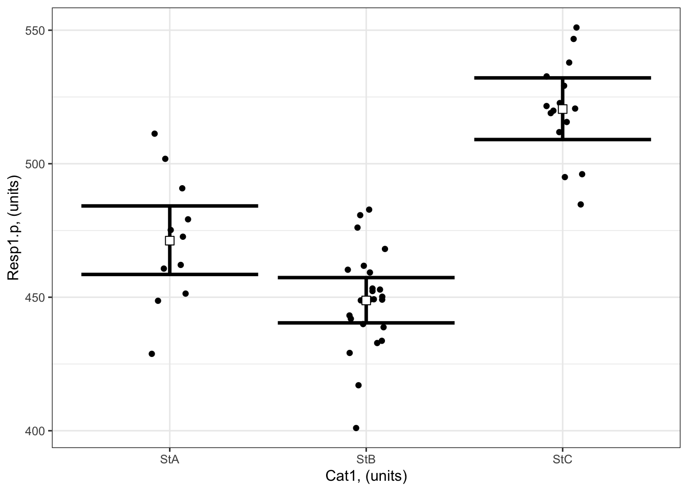
What are your modelled effects (with uncertainty)?
For categorical predictors, you can get the coefficients on the response scale directly with the emmeans() function20 when you specify type = “response”:
library(emmeans) # load the emmeans packageemmOut <-emmeans(object = bestMod1.p, # your modelspecs =~ Cat1 +1, # your predictorstype ="response") # report coefficients on the response scaleemmOut
Cat1 rate SE df asymp.LCL asymp.UCL
StA 471 6.54 Inf 459 484
StB 449 4.32 Inf 440 457
StC 520 5.89 Inf 509 532
Confidence level used: 0.95
Intervals are back-transformed from the log scale
Notice that the column reported is “rate”: these are the coefficients converted back onto the response scale.
Note also that two types of uncertainty are measured here. SE stands for the standard error around the prediction, and is a measure of uncertainty of the average modelled effect. The lower.CL and upper.CL represent the 95% confidence limits of the prediction - so if I observed a new Resp1.p at a particular Cat1, there would be a 95% chance it would lie between the bounds of the confidence limits.
From this output you see:
When Cat1 is SpA, Resp1.p is estimated to be 471 (95% confidence interval: 459 to 484 units).
When Cat1 is SpB, Resp1.p is estimated to be 449 (95% confidence interval: 440 to 457 units).
When Cat1 is SpC, Resp1.p is estimated to be 520 (95% confidence interval: 509 to 532 units).
Finally, note that you can also get a quick plot of the effects by handing the emmeans() output to plot().
Are the modelled effects different than one another across categorical levels? (only needed for categorical predictors with more than two levels)
Here you can compare the effects of the levels of Cat1 on Resp1.p to see if the effects differ between the levels.
contrast ratio SE df null z.ratio p.value
StA / StB 1.050 0.0177 Inf 1 2.880 0.0040
StA / StC 0.905 0.0162 Inf 1 -5.552 <0.0001
StB / StC 0.862 0.0128 Inf 1 -9.968 <0.0001
P value adjustment: fdr method for 3 tests
Tests are performed on the log scale
The output shows the results of the multiple comparison (pairwise) testing.
The values in the p.value column tell you the results of the hypothesis test comparing the coefficients between the two levels of your categorical predictor.
For example:
there is evidence that Resp1.p is significantly larger when Cat 1 = SpA than when Cat1 = SpB (p = 0.004). Resp1.p is expected to be ~ 5 ± 2% bigger when Cat 1 = SpA than when Cat 1 = SpB.
there is evidence that Resp1.p is significantly smaller when Cat 1 = SpA than when Cat1 = SpC (p = 0). Resp1.p is expected to be ~ 9 ± 2% smaller when Cat 1 = SpA than when Cat 1 = SpC.
Note that you can also get the results from the pairwise testing visually by handing the output of pairs() to plot().
Example 2: Resp2.p ~ Cat2 + Cat3 + Cat2:Cat3 + 1
Example 2: Resp2.p ~ Cat2 + Cat3 + Cat2:Cat3 + 1
Recall that Example 2 contains two predictors and both are categorical:
Resp2.p ~ Cat2 + Cat3 + Cat2:Cat3 + 1
The best-specified model (now with poisson error distribution assumption) is:
#### i) choosing the values of your predictors at which to make a prediction# Set up your predictors for the visualized fitforCat2<-unique(myDat2.p$Cat2) # every level of your categorical predictorforCat3<-unique(myDat2.p$Cat3) # every level of your categorical predictor# create a data frame with your predictorsforVis<-expand.grid(Cat2 = forCat2, Cat3 = forCat3) # expand.grid() function makes sure you have all combinations of predictors#### ii) using `predict()` to use your model to estimate your response variable at those values of your predictor# Get your model fit estimates at each value of your predictorsmodFit<-predict(bestMod2.p, # the modelnewdata = forVis, # the predictor valuestype ="link", # here, make the predictions on the link scale and we'll translate the back belowse.fit =TRUE) # include uncertainty estimateilink <-family(bestMod2.p)$linkinv # get the conversion (inverse link) from the model to translate back to the response scaleforVis$Fit<-ilink(modFit$fit) # add your fit to the data frameforVis$Upper<-ilink(modFit$fit +1.96*modFit$se.fit) # add your uncertainty to the data frame, 95% confidence intervalsforVis$Lower<-ilink(modFit$fit -1.96*modFit$se.fit) # add your uncertainty to the data frame#### iii) use the model estimates to plot your model fitlibrary(ggplot2) # load ggplot2 libraryggplot() +# start ggplotgeom_point(data = myDat2.p, # add observations to your plotmapping =aes(x = Cat2, y = Resp2.p, col = Cat3), position=position_jitterdodge(jitter.width=0.75, dodge.width=0.75)) +# control position of data points so they are easier to see on the plotgeom_errorbar(data = forVis, # add the uncertainty to your plotmapping =aes(x = Cat2, y = Fit, ymin = Lower, ymax = Upper, col = Cat3),position=position_dodge(width=0.75), # control position of data points so they are easier to see on the plotsize=1.2) +# control thickness of errorbar linegeom_point(data = forVis, # add the modelled fit to your plotmapping =aes(x = Cat2, y = Fit, fill = Cat3), shape =22, # shape of pointsize=3, # size of pointcol ='black', # outline colour for pointposition=position_dodge(width=0.75)) +# control position of data points so they are easier to see on the plotylab("Resp2.p, (units)")+# change y-axis labelxlab("Cat2, (units)")+# change x-axis labellabs(fill="Cat3, (units)", col="Cat3, (units)") +# change legend titletheme_bw() # change ggplot theme
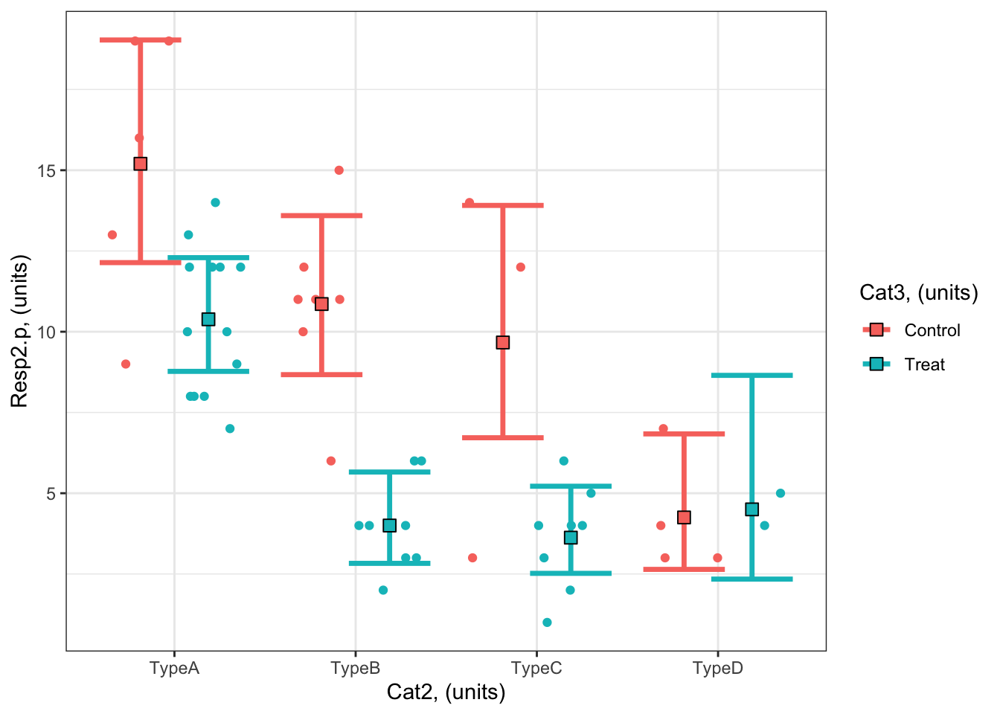
What are your modelled effects (with uncertainty)?
As above, we can use the emmeans package to see the effects of the predictors on the scale of the response:
emmOut <-emmeans(object = bestMod2.p, # your modelspecs =~ Cat2 + Cat3 + Cat2:Cat3, # your predictorstype ="response") # report coefficients on the response scaleemmOut
Cat2 Cat3 rate SE df asymp.LCL asymp.UCL
TypeA Control 15.20 1.740 Inf 12.14 19.03
TypeB Control 10.86 1.250 Inf 8.67 13.59
TypeC Control 9.67 1.800 Inf 6.72 13.91
TypeD Control 4.25 1.030 Inf 2.64 6.84
TypeA Treat 10.38 0.894 Inf 8.77 12.29
TypeB Treat 4.00 0.707 Inf 2.83 5.66
TypeC Treat 3.62 0.673 Inf 2.52 5.22
TypeD Treat 4.50 1.500 Inf 2.34 8.65
Confidence level used: 0.95
Intervals are back-transformed from the log scale
So now we have a modelled value of our response for each level of our categorical predictors. For example:
The modelled prediction for Resp2.p when Cat2 is TypeA and Cat3 is Treat is 15.2 (95% confidence interval: 12.1 - 19.0 units).
The modelled prediction for Resp2.p when Cat2 is TypeC and Cat3 is Control is 9.7 units (95% confidence interval: 6.7 - 13.9 units).
Finally, note that you can also get a quick plot of the effects by handing the emmeans() output to plot().
Are the modelled effects different than one another across categorical levels? (only needed for categorical predictors with more than two levels)
As with Example 1, you can also find out which combinations of predictor levels are leading to statistically different model predictions in Resp2.p:
forComp <-pairs(emmOut, # emmeans outputadjust ="fdr", # multiple testing adjustmentsimple ="Cat2") # contrasts within this categorical predictorforComp
Here you can more easily see the contrasts. Contrast ratios similar to 1 mean that the predictor levels lead to a similar value of the response.
Based on a threshold P-value of 0.05, you can see that the effects at some combinations of your predictors are not statistically different from each other. For example, the coefficient (predicted Resp2.p) when Cat3 = Control and Cat2 = TypeB (10.9) is 1.12 times (or 12%) more than the predicted Resp2.p when Cat3 = Control and Cat2 = TypeC (9.7), but there is no evidence that the difference has any meaning as P = 0.59 for this comparison.
On the other hand, some combinations of your predictors are statistically different from each other. For example, a comparison of modelled Resp2.p when Cat3 = Control and Cat2 = TypeB (10.9) is 2.6 times (or 160%) higher than when Cat3 = Control and Cat2 = TypeD (4.2) and there is strong evidence that this difference is meaningful as P < 0.0014.
Note that you can also get the results from the pairwise testing visually by handing the output of pairs() to plot().
Example 3: Resp3.p ~ Num4 + 1
Example 3: Resp3.p ~ Num4 + 1
Recall that Example 3 contains one predictor and the predictor is numeric:
Resp3 ~ Num4 + 1
The best-specified model (now with poisson error distribution assumption) is:
bestMod3.p
Call: glm(formula = Resp ~ Num4 + 1, family = poisson(link = "log"),
data = myDat3.p)
Coefficients:
(Intercept) Num4
1.577204 0.006674
Degrees of Freedom: 49 Total (i.e. Null); 48 Residual
Null Deviance: 74.74
Residual Deviance: 62.96 AIC: 256.7
that was fit to data in myDat3.p:
str(myDat3.p)
'data.frame': 50 obs. of 2 variables:
$ Num4 : num 67.5 61.9 71.5 116.6 55.9 ...
$ Resp3.p: int 12 8 4 12 0 2 4 10 8 7 ...
and the dredge() table you used to pick your bestMod3.p is
dredgeOut3.p
Global model call: glm(formula = Resp ~ Num4 + 1, family = poisson(link = "log"),
data = myDat3.p)
---
Model selection table
(Intrc) Num4 df logLik AICc delta weight
2 1.577 0.006674 2 -126.339 256.9 0.00 0.992
1 2.069 1 -132.230 266.5 9.61 0.008
Models ranked by AICc(x)
And here’s a visualization of the model effects:
#### i) choosing the values of your predictors at which to make a prediction# Set up your predictors for the visualized fitforNum4<-seq(from =min(myDat3.p$Num4), to =max(myDat3.p$Num4), by =1)# a sequence of numbers in your numeric predictor range# create a data frame with your predictorsforVis<-expand.grid(Num4 = forNum4) # expand.grid() function makes sure you have all combinations of predictors. #### ii) using `predict()` to use your model to estimate your response variable at those values of your predictor# Get your model fit estimates at each value of your predictorsmodFit<-predict(bestMod3.p, # the modelnewdata = forVis, # the predictor valuestype ="link", # here, make the predictions on the link scale and we'll translate the back belowse.fit =TRUE) # include uncertainty estimateilink <-family(bestMod3.p)$linkinv # get the conversion (inverse link) from the model to translate back to the response scaleforVis$Fit<-ilink(modFit$fit) # add your fit to the data frameforVis$Upper<-ilink(modFit$fit +1.96*modFit$se.fit) # add your uncertainty to the data frame, 95% confidence intervalsforVis$Lower<-ilink(modFit$fit -1.96*modFit$se.fit) # add your uncertainty to the data frame#### iii) use the model estimates to plot your model fitlibrary(ggplot2) # load ggplot2 libraryggplot() +# start ggplotgeom_point(data = myDat3.p, # add observations to your plotmapping =aes(x = Num4, y = Resp3.p)) +# control position of data points so they are easier to see on the plotgeom_line(data = forVis, # add the modelled fit to your plotmapping =aes(x = Num4, y = Fit),linewidth =1.2) +# control thickness of linegeom_line(data = forVis, # add uncertainty to your plot (upper line)mapping =aes(x = Num4, y = Upper),linewidth =0.8, # control thickness of linelinetype =2) +# control style of linegeom_line(data = forVis, # add uncertainty to your plot (lower line)mapping =aes(x = Num4, y = Lower),linewidth =0.8, # control thickness of linelinetype =2) +# control style of lineylab("Resp3.p, (units)") +# change y-axis labelxlab("Num4, (units)") +# change x-axis labeltheme_bw() # change ggplot theme
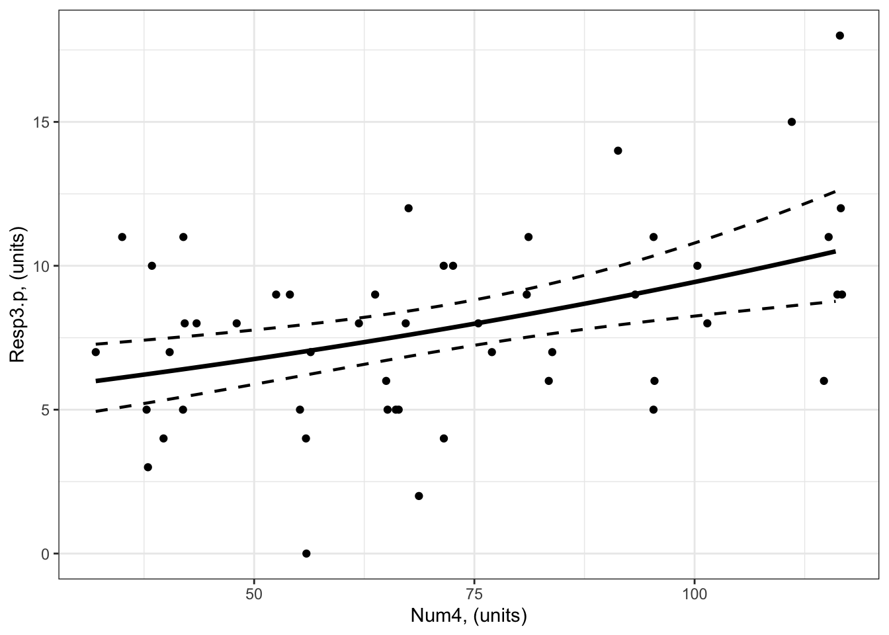
trendsOut <-emtrends(bestMod3.p,specs =~ Num4 +1, # your predictorsvar ="Num4") # your predictor of interesttrendsOut
Note that these are the same estimates as we find in the summary() of your model object
coef(summary(bestMod3.p))
Estimate Std. Error z value Pr(>|z|)
(Intercept) 1.577203770 0.155306248 10.155443 3.133832e-24
Num4 0.006674037 0.001934204 3.450534 5.594789e-04
This is an estimate of the modelled effects in the linked world. We need to consider our log link function to report the modelled effects in the response world.
Since you have a poisson error distribution assumption, you can convert the estimate made by emtrends() on to the response scale with:
trendsOut.df <-data.frame(trendsOut) # convert trendsOut to a dataframeRR <-exp(trendsOut.df$Num4.trend) # get the coefficient on the response scaleRR
[1] 1.006696
We can also use the same conversion on the confidence limits of the modelled effect, for the upper:
RR.up <-exp(trendsOut.df$asymp.UCL) # get the upper confidence interval on the response scaleRR.up
[1] 1.01052
and lower 95% confidence level:
RR.low <-exp(trendsOut.df$asymp.LCL) # get the lower confidence interval on the response scaleRR.low
[1] 1.002887
This tells you that for a unit change in Num4, Resp3 increases by 1.007x (95% confidence interval is 1.003 to 1.011) which is an increase of 0.67%.
Example 4: Resp4.p ~ Cat5 + Num6 + Cat5:Num6 + 1
Example 4: Resp4.p ~ Cat5 + Num6 + Cat5:Num6 + 1
Recall that Example 4 contains two predictors, one is categorical and one is numeric:
Resp4 ~ Cat5 + Num6 + Cat5:Num6 + 1
The best-specified model (now with poisson error distribution assumption) is:
#### i) choosing the values of your predictors at which to make a prediction# Set up your predictors for the visualized fitforCat5<-unique(myDat4.p$Cat5) # all levels of your categorical predictorforNum6<-seq(from =min(myDat4.p$Num6), to =max(myDat4.p$Num6), by =1)# a sequence of numbers in your numeric predictor range# create a data frame with your predictorsforVis<-expand.grid(Cat5 = Cat5, Num6 = forNum6) # expand.grid() function makes sure you have all combinations of predictors. #### ii) using `predict()` to use your model to estimate your response variable at those values of your predictor# Get your model fit estimates at each value of your predictorsmodFit<-predict(bestMod4.p, # the modelnewdata = forVis, # the predictor valuestype ="link", # here, make the predictions on the link scale and we'll translate the back belowse.fit =TRUE) # include uncertainty estimateilink <-family(bestMod4.p)$linkinv # get the conversion (inverse link) from the model to translate back to the response scaleforVis$Fit<-ilink(modFit$fit) # add your fit to the data frameforVis$Upper<-ilink(modFit$fit +1.96*modFit$se.fit) # add your uncertainty to the data frame, 95% confidence intervalsforVis$Lower<-ilink(modFit$fit -1.96*modFit$se.fit) # add your uncertainty to the data frame#### iii) use the model estimates to plot your model fitlibrary(ggplot2) # load ggplot2 libraryggplot() +# start ggplotgeom_point(data = myDat4.p, # add observations to your plotmapping =aes(x = Num6, y = Resp4.p, col = Cat5)) +# control position of data points so they are easier to see on the plotgeom_line(data = forVis, # add the modelled fit to your plotmapping =aes(x = Num6, y = Fit, col = Cat5),linewidth =1.2) +# control thickness of linegeom_line(data = forVis, # add uncertainty to your plot (upper line)mapping =aes(x = Num6, y = Upper, col = Cat5),linewidth =0.4, # control thickness of linelinetype =2) +# control style of linegeom_line(data = forVis, # add uncertainty to your plot (lower line)mapping =aes(x = Num6, y = Lower, col = Cat5),linewidth =0.4, # control thickness of linelinetype =2) +# control style of lineylab("Resp4, (units)") +# change y-axis labelxlab("Num6, (units)") +# change x-axis labellabs(fill="Cat5, (units)", col="Cat5, (units)") +# change legend titletheme_bw() # change ggplot theme
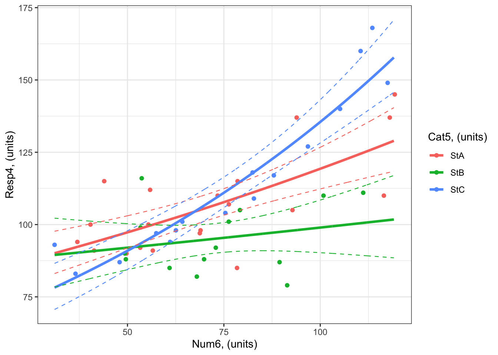
What are your modelled effects (with uncertainty)?
The process for estimating effects of categorical vs. numeric predictors is different.
For categorical predictors (Cat5), you can use emmeans() to give you the effects on the response scale directly:
emmOut <-emmeans(object = bestMod4.p, # your modelspecs =~ Cat5 + Num6 + Cat5:Num6 +1, # your predictorstype ="response") # report coefficients on the response scaleemmOut
Cat5 Num6 rate SE df asymp.LCL asymp.UCL
StA 73.5 107.1 2.32 Inf 102.7 112
StB 73.5 95.2 2.61 Inf 90.2 100
StC 73.5 109.7 2.70 Inf 104.5 115
Confidence level used: 0.95
Intervals are back-transformed from the log scale
When Cat5 is StA, Resp4.p is estimated to be 74 (95% confidence interval: to 103 units).
When Cat5 is StB, Resp4.p is estimated to be 74 (95% confidence interval: to 90 units). When Cat5 is StC, Resp4.p is estimated to be 74 (95% confidence interval: to 105 units).
For numeric predictors (Num6), you need to use the emtrends() function and then convert the coefficients to the response scale:
trendsOut <-emtrends(bestMod4.p,specs =~ Cat5 + Num6 + Cat5:Num6 +1, # your predictorsvar ="Num6") # your predictor of interesttrendsOut
Since you have a poisson error distribution assumption, you can convert the estimate made by emtrends() on to the response scale with the exp() function:
trendsOut.df <-data.frame(trendsOut) # convert trendsOut to a dataframeRR <-exp(trendsOut.df$Num6.trend) # get the coefficient on the response scaleRR
[1] 1.004084 1.001458 1.008005
You can also use the same conversion on the confidence limits of the modelled effect, for the upper:
RR.up <-exp(trendsOut.df$asymp.UCL) # get the upper confidence interval on the response scaleRR.up
[1] 1.005716 1.004309 1.009791
and lower 95% confidence level:
RR.low <-exp(trendsOut.df$asymp.LCL) # get the lower confidence interval on the response scaleRR.low
[1] 1.0024542 0.9986158 1.0062224
Let’s organize these numbers so we can read the effects easier:
RRAll <-data.frame(Cat5 = trendsOut.df$Cat5, # include info on the Cat5 levelRR =exp(trendsOut.df$Num6.trend), # the modelled effect as a rate ratioRR.up =exp(trendsOut.df$asymp.UCL), # upper 95% confidence level of the modelled effectRR.down =exp(trendsOut.df$asymp.LCL)) # lower 95% confidence level of the modelled effectRRAll
This tells you that for a unit change in Num6, Resp4.p
increases by 1.004 times (an increase of 0.41%) when Cat5 is StA (95% confidence interval: 1.002 to 1.006).
increases by 1.001 times (an increase of 0.15%) when Cat5 is StB (95% confidence interval: 0.999 to 1.004).
increases by 1.008 times (an increase of 0.8%) when Cat5 is StC (95% confidence interval: 1.006 to 1.01).
Note that the 95% confidence interval for the effect of Num6 on Resp4.p (the rate ratio) includes 1. When the rate ratio is 1, there is no effect of the numeric predictor on the response.
You can test for evidence that the effects of Num6 on Resp4.p are significant with:
test(trendsOut) # get test if coefficient is different than zero.
Note that these tests are done on the link scale but can be used for reporting effects on the response scale.
From the results, you can see that:
there is evidence that there is an effect of Num6 on Resp4.p when Cat5 = StA. (i.e. the slope on the link scale is different than zero, and the rate ratio on the response scale is different than 1; P < 0.0001).
there is no evidence that there is an effect of Num6 on Resp4.p when Cat5 = StB. (i.e. the slope on the link scale is not different than zero, and the rate ratio on the response scale is not different than 1; P = 0.32).
there is evidence that there is an effect of Num6 on Resp4.p when Cat5 = StC. (i.e. the slope on the link scale is different than zero, and the rate ratio on the response scale is different than 1; P < 0.0001).
Are the modelled effects different than one another across categorical levels? (only needed for categorical predictors with more than two levels)
You can also find out which effects of Num6 on Resp4.p are different from one another using pairs() on the emtrends() output:
forCompRR <-pairs(trendsOut, # emmeans objectadjust ="fdr", # multiple comparison adjustmentsimple ="Cat5") # contrasts within this categorical predictorforCompRR
Num6 = 73.5:
contrast estimate SE df z.ratio p.value
StA - StB 0.00262 0.00167 Inf 1.568 0.1170
StA - StC -0.00390 0.00123 Inf -3.180 0.0022
StB - StC -0.00652 0.00171 Inf -3.814 0.0004
P value adjustment: fdr method for 3 tests
Remember that you need to convert any predictor coefficients to the response scale when reporting.
The table above tells you that:
There is no evidence the effect of Num6 on Resp4.p differs when Cat5 is StA vs. StB (P = 0.12).
There is evidence that the effect of Num6 on Resp4.p is different when Cat5 is StA vs. StC (P = 0.0022). The effect of Num6 on Resp4.p is exp(-0.0039) = 0.996 times as big when Cat5 is StA vs. StC.
There is evidence that the effect of Num6 on Resp4.p is different when Cat5 is StB vs. StC (P = 0.0004). The effect of Num6 on Resp4.p is exp(-0.00652) = 0.994 times as big when Cat5 is StB vs. StC.
Only if all the slopes were similar: you would want to test if the levels of your categorical predictor (Cat5) have significantly different coefficients (intercepts) from each other with pairs() on the output from emmeans() (the emmOut object).
For models with a Gamma error distribution assumption
For models with a Gamma error distribution assumption, the default link function is the inverse or link = "inverse". You need to take this link function into consideration when you report your modelled effects.
For a model where link = "inverse", the interpretation of the coefficients on the response scale are difficult to interpret.
Because of this, you can fit your GLM with a log link function (link = "log") similar to your models with a poisson error distribution assumption (and validate your model). It is much easier to interpret coefficients with a log (vs. inverse) link function - you can use the methods described above for the poisson error distribution assumption.
For models with a binomial error distribution assumption
For a binomial error distribution assumption, the effect of a numeric predictor on the response is the percent change in the odds for a unit change in the predictor.
What are odds?
Recall that models with a binomial error distribution assumption model the probability of an event happening. This might be presence (vs. absence), mature (vs. immature), death (vs. alive), etc., but in all cases this is represented as the probability of your response being 1 (vs. 0).
If \(p\) is the probability of an event happening (e.g. response being 1), the probability an event doesn’t happen is \(1-p\) when an event can only have two outcomes. The odds are the probability of the event happening divided by the probability it does not happen, or:
\(\frac{p}{1-p}\)
For models with a binomial error distribution assumption, you will typically use the logit function or link = "logit" for your link function22. The logit function is also called the “log-odds” function as it is equal to the logarithm of the odds:
\(log_e(\frac{p}{1-p})\)
Alternate link functions for binomially distributed data are probit and cloglog, but the logit link function is by far the one most used as the coefficients that result from the model when using a logit link function are the easiest to interpret. But, as always, you should choose the link function that leads to the best-behaved residuals for your model (See more in the Model Validation section).
You report your coefficients of a model with a binomial error distribution assumption (and link = “logit”) on the response scale by raising e to the power of the coefficients estimated on the link scale.
Here is the math that connects the coefficient to the odds ratio:
the math
Given a binomial model, \[
\begin{align}
log_e(\frac{p_i}{1-p_i}) &= \beta_1 \cdot Pred_i + \beta_0 \\
Resp_i &\sim binomial(p_i)
\end{align}
\]\(p_i\) is the probability of success and \(1-p_i\) is the probability of failure, and the odds are \(\frac{p_i}{1-p_i}\).
Then the odds ratio (OR), or % change in odds due to a change in predictor is:
Examples with a binomial error distribution assumption:
We have made new examples where the error distribution assumption is binomial This changes the response variables, indicated by Resp1.b, Resp2.b, etc. to be values of either 0 or 1.
Example 1: Resp1.b ~ Cat1 + 1
Example 1: Resp1.b ~ Cat1 + 1
Recall that Example 1 contains only one predictor and it is categorical:
Resp1.b ~ Cat1 + 1
The best-specified model (now with a binomial error distribution assumption) is:
bestMod1.b
Call: glm(formula = Resp1.b ~ Cat1 + 1, family = binomial(link = "logit"),
data = myDat1)
Coefficients:
(Intercept) Cat1StB Cat1StC
-0.6931 -1.8718 1.6094
Degrees of Freedom: 49 Total (i.e. Null); 47 Residual
Null Deviance: 68.03
Residual Deviance: 51.43 AIC: 57.43
and the dredge() table you used to pick your bestMod1.b is in dredgeOut1.b
dredgeOut1.b
Global model call: glm(formula = Resp1.b ~ Cat1 + 1, family = binomial(link = "logit"),
data = myDat1)
---
Model selection table
(Intrc) Cat1 R^2 df logLik AICc delta weight
2 -0.6931 + 0.2825 3 -25.714 57.9 0.00 0.998
1 -0.3228 0.0000 1 -34.015 70.1 12.16 0.002
Models ranked by AICc(x)
And here’s a visualization of the model effects:
# Set up your predictors for the visualized fitforCat1<-unique(myDat1.b$Cat1) # every value of your categorical predictor# create a data frame with your predictorsforVis<-expand.grid(Cat1=forCat1) # expand.grid() function makes sure you have all combinations of predictors# Get your model fit estimates at each value of your predictorsmodFit<-predict(bestMod1.b, # the modelnewdata = forVis, # the predictor valuestype ="link", # here, make the predictions on the link scale and we'll translate the back belowse.fit =TRUE) # include uncertainty estimateilink <-family(bestMod1.b)$linkinv # get the conversion (inverse link) from the model to translate back to the response scaleforVis$Fit<-ilink(modFit$fit) # add your fit to the data frameforVis$Upper<-ilink(modFit$fit +1.96*modFit$se.fit) # add your uncertainty to the data frame, 95% confidence intervalsforVis$Lower<-ilink(modFit$fit -1.96*modFit$se.fit) # add your uncertainty to the data framelibrary(ggplot2)ggplot() +# start ggplotgeom_point(data = myDat1.b, # add observations to your plotmapping =aes(x = Cat1, y = Resp1.b)) +geom_errorbar(data = forVis, # add the uncertainty to your plotmapping =aes(x = Cat1, y = Fit, ymin = Lower, ymax = Upper),linewidth=1.2) +# control thickness of errorbar linegeom_point(data = forVis, # add the modelled fit to your plotmapping =aes(x = Cat1, y = Fit), shape =22, # shape of pointsize =3, # size of pointfill ="white", # fill colour for plotcol ='black') +# outline colour for plotylab("probability Resp1.b = 1")+# change y-axis labelxlab("Cat1, (units)")+# change x-axis labeltheme_bw() # change ggplot theme
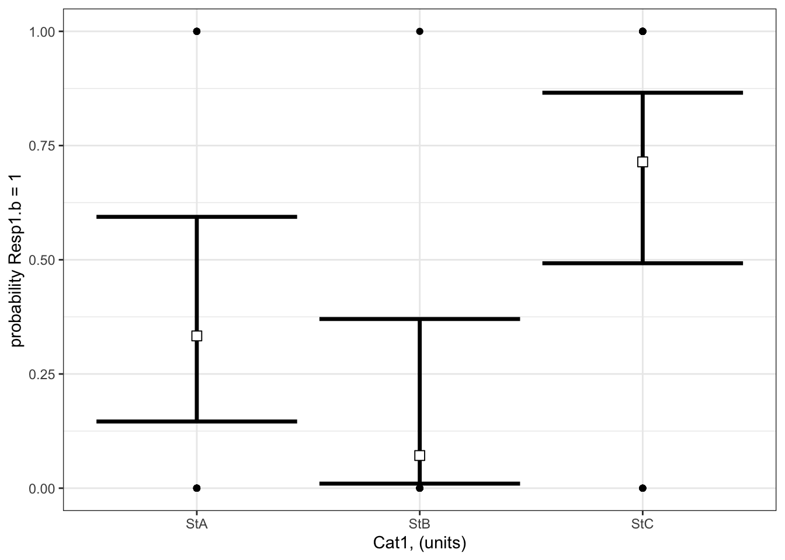
What are your modelled effects (with uncertainty)?
For categorical predictors, you can get the coefficients on the response scale directly with the emmeans() function23 when you specify type = “response”. These are the probabilities (not odds or odds ratio) that Resp1.b = 1 at each level of your categorical predictor:
library(emmeans) # load the emmeans packageemmOut <-emmeans(object = bestMod1.b, # your modelspecs =~ Cat1, # your predictorstype ="response") # report coefficients on the response scaleemmOut
Cat1 prob SE df asymp.LCL asymp.UCL
StA 0.3333 0.1220 Inf 0.14596 0.594
StB 0.0714 0.0688 Inf 0.00996 0.370
StC 0.7143 0.0986 Inf 0.49239 0.866
Confidence level used: 0.95
Intervals are back-transformed from the logit scale
Notice that the column reported is prob: these coefficients are already converted back onto the response scale (as probabilities).
Note also that two types of uncertainty are measured here. SE stands for the standard error around the prediction, and is a measure of uncertainty of the average modelled effect. The lower.CL and upper.CL represent the 95% confidence limits of the prediction - so if you observed a new Resp1.b at a particular Cat1, there is a 95% probability that the probability Resp1.b is 1 would lie within the bounds of the confidence limits.
From this output you see:
When Cat1 is SpA, the probability that Resp1.b is 1 is estimated to be 0.33 (95% confidence interval: 0.15 to 0.59 units). This is equivalent to odds (\(\frac{p}{(1-p)}\)) of 0.5.
When Cat1 is SpB, the probability that Resp1.b is 1 is estimated to be 0.07 (95% confidence interval: 0.01 to 0.37 units). This is equivalent to odds (\(\frac{p}{(1-p)}\)) of 0.08.
When Cat1 is SpC, the probability that Resp1.b is 1 is estimated to be 0.71 (95% confidence interval: 0.49 to 0.87 units). This is equivalent to odds (\(\frac{p}{(1-p)}\)) of 2.5.
Finally, note that you can also get a quick plot of the effects by handing the emmeans() output to plot().
where do these probabilities and odds come from?
The emmeans package provides an easy way of seeing the effects of Cat1 on Resp1.b the response scale, but you can also get this information from the summary() output:
You can convert the coefficients to odds with the exp() function, for example:
When Cat1 is SpA, the odds that Resp1.b is 1 is estimated to be exp(coef(summary(bestMod1.b))[1]) = 0.5. And you can get the probabilities directly with the plogis() function (plogis(coef(summary(bestMod1.b))[1]) = 0.333).
Are the modelled effects different than one another across categorical levels? (only needed for categorical predictors with more than two levels)
Here you can compare the effects of the levels of Cat1 on Resp1.b to see if the effects differ between the levels.
contrast odds.ratio SE df null z.ratio p.value
StA / StB 6.5000 7.6300 Inf 1 1.595 0.1107
StA / StC 0.2000 0.1460 Inf 1 -2.204 0.0413
StB / StC 0.0308 0.0352 Inf 1 -3.041 0.0071
P value adjustment: fdr method for 3 tests
Tests are performed on the log odds ratio scale
The output shows the results of the multiple comparison (pairwise) testing.
The values in the p.value column tell you the results of the hypothesis test comparing the coefficients between the two levels of your categorical predictor.
Note the odds.ratio column here. Comparing effects of Cat1 on the probability of Resp1.b is done by comparing odds of Resp1.b being 1 under each level of Cat1.
For example:
there is no evidence that the probability of Resp1.b being 1 is different when Cat 1 = SpA vs. when Cat1 = SpB (P = 0.1107).
there is little evidence that the probability of Resp1.b being 1 is different when Cat 1 = SpA than when Cat1 = SpC (P = 0.0413). The odds ratio is 0.2.
there is strong evidence that the probability of Resp1.b being 1 is different when Cat 1 = SpB than when Cat1 = SpC (P = 0.0071). The odds ratio is 0.0308.
where did this odds ratio come from?
This is a ratio of the odds of that Resp1.b is 1 when Cat 1 = SpA vs. the odds of that Resp1.b is 1 when Cat 1 = SpC:
For example, the odds that Resp1.b is 1 when Cat 1 = SpA are:
#### i) choosing the values of your predictors at which to make a prediction# Set up your predictors for the visualized fitforCat2<-unique(myDat2.b$Cat2) # every level of your categorical predictorforCat3<-unique(myDat2.b$Cat3) # every level of your categorical predictor# create a data frame with your predictorsforVis<-expand.grid(Cat2 = forCat2, Cat3 = forCat3) # expand.grid() function makes sure you have all combinations of predictors#### ii) using `predict()` to use your model to estimate your response variable at those values of your predictor# Get your model fit estimates at each value of your predictorsmodFit<-predict(bestMod2.b, # the modelnewdata = forVis, # the predictor valuestype ="link", # here, make the predictions on the link scale and we'll translate the back belowse.fit =TRUE) # include uncertainty estimateilink <-family(bestMod2.b)$linkinv # get the conversion (inverse link) from the model to translate back to the response scaleforVis$Fit<-ilink(modFit$fit) # add your fit to the data frameforVis$Upper<-ilink(modFit$fit +1.96*modFit$se.fit) # add your uncertainty to the data frame, 95% confidence intervalsforVis$Lower<-ilink(modFit$fit -1.96*modFit$se.fit) # add your uncertainty to the data frame#### iii) use the model estimates to plot your model fitlibrary(ggplot2) # load ggplot2 libraryggplot() +# start ggplotgeom_point(data = myDat2.b, # add observations to your plotmapping =aes(x = Cat2, y = Resp2.b, col = Cat3), position=position_jitterdodge(jitter.width=0.75, dodge.width=0.75)) +# control position of data points so they are easier to see on the plotgeom_errorbar(data = forVis, # add the uncertainty to your plotmapping =aes(x = Cat2, y = Fit, ymin = Lower, ymax = Upper, col = Cat3),position=position_dodge(width=0.75), # control position of data points so they are easier to see on the plotsize=1.2) +# control thickness of errorbar linegeom_point(data = forVis, # add the modelled fit to your plotmapping =aes(x = Cat2, y = Fit, fill = Cat3), shape =22, # shape of pointsize=3, # size of pointcol ='black', # outline colour for pointposition=position_dodge(width=0.75)) +# control position of data points so they are easier to see on the plotylab("probability Resp2.b = 1")+# change y-axis labelxlab("Cat2, (units)")+# change x-axis labellabs(fill="Cat3, (units)", col="Cat3, (units)") +# change legend titletheme_bw() # change ggplot theme
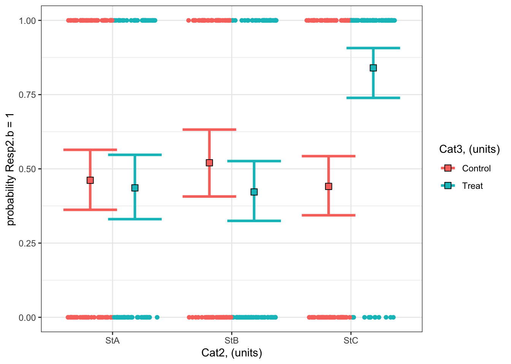
What are your modelled effects (with uncertainty)?
As above, we can use the emmeans package to see the effects of the predictors on the scale of the response:
emmOut <-emmeans(object = bestMod2.b, # your modelspecs =~ Cat2 + Cat3 + Cat2:Cat3, # your predictorstype ="response") # report coefficients on the response scaleemmOut
Cat2 Cat3 prob SE df asymp.LCL asymp.UCL
StA Control 0.462 0.0523 Inf 0.362 0.564
StB Control 0.521 0.0585 Inf 0.407 0.632
StC Control 0.441 0.0515 Inf 0.344 0.543
StA Treat 0.436 0.0561 Inf 0.331 0.547
StB Treat 0.422 0.0521 Inf 0.325 0.526
StC Treat 0.840 0.0423 Inf 0.739 0.907
Confidence level used: 0.95
Intervals are back-transformed from the logit scale
So now you have a modelled value of your response for each level of your categorical predictors. For example:
When Cat2 is StA and Cat3 is Treat, the probability that Resp1.b is 1 is estimated to be 0.44 (95% confidence interval: 0.33 to 0.55 units).
When Cat2 is StB and Cat3 is Control, the probability that Resp1.b is 1 is estimated to be 0.52 (95% confidence interval: 0.41 to 0.63 units).
Finally, note that you can also get a quick plot of the effects by handing the emmeans() output to plot().
Are the modelled effects different than one another across categorical levels? (only needed for categorical predictors with more than two levels)
As with Example 1, you can also find out which combinations of predictor levels are leading to statistically different model predictions in Resp2.b:
forComp <-pairs(emmOut, # emmeans outputadjust ="fdr", # multiple comparison adjustmentsimple ="Cat2") # contrasts within this categorical predictorforComp
Cat3 = Control:
contrast odds.ratio SE df null z.ratio p.value
StA / StB 0.789 0.2490 Inf 1 -0.751 0.6791
StA / StC 1.087 0.3220 Inf 1 0.282 0.7781
StB / StC 1.377 0.4320 Inf 1 1.019 0.6791
Cat3 = Treat:
contrast odds.ratio SE df null z.ratio p.value
StA / StB 1.057 0.3300 Inf 1 0.179 0.8582
StA / StC 0.147 0.0573 Inf 1 -4.925 <0.0001
StB / StC 0.139 0.0530 Inf 1 -5.183 <0.0001
P value adjustment: fdr method for 3 tests
Tests are performed on the log odds ratio scale
Based on a threshold P-value of 0.05, you can see that the effects at some combinations of your predictors are not statistically different from each other. For example, there is no evidence that the probability of Resp2.b being 1 when Cat3 = Control and Cat2 = StA (0.46)24 than when Cat3 = Control and Cat2 = StB (0.52) is different from each other (P = 0.68).
On the other hand, some combinations of your predictors are statistically different from each other. For example, there is strong evidence that the probability of Resp2.b being 1 when Cat3 = Treat and Cat2 = StA (0.46) is less than that when Cat3 = Treat and Cat2 = StC (0.84) is different from each other (P < 0.0001).
Note that you can also get the results from the pairwise testing visually by handing the output of pairs() to plot().
Example 3: Resp3.b ~ Num4 + 1
Example 3: Resp3.b ~ Num4 + 1
Recall that Example 3 contains one predictor and the predictor is numeric:
Resp3 ~ Num4 + 1
The best-specified model (now with a binomial error distribution assumption) is:
bestMod3.b
Call: glm(formula = Resp3.b ~ Num4 + 1, family = binomial(link = "logit"),
data = myDat3.b)
Coefficients:
(Intercept) Num4
-8.1519 0.1086
Degrees of Freedom: 299 Total (i.e. Null); 298 Residual
Null Deviance: 415.8
Residual Deviance: 199.1 AIC: 203.1
that was fit to data in myDat3.b:
str(myDat3.b)
'data.frame': 300 obs. of 2 variables:
$ Num4 : num 57.7 53.2 79.7 35.1 72.2 ...
$ Resp3.b: int 1 0 1 0 0 1 1 1 1 0 ...
and the dredge() table you used to pick your bestMod3.b is
dredgeOut3.b
Global model call: glm(formula = Resp3.b ~ Num4 + 1, family = binomial(link = "logit"),
data = myDat3.b)
---
Model selection table
(Intrc) Num4 R^2 df logLik AICc delta weight
2 -8.15200 0.1086 0.5144 2 -99.533 203.1 0.00 1
1 0.04001 0.0000 1 -207.884 417.8 214.68 0
Models ranked by AICc(x)
And here’s a visualization of the model effects:
#### i) choosing the values of your predictors at which to make a prediction# Set up your predictors for the visualized fitforNum4<-seq(from =min(myDat3.b$Num4), to =max(myDat3.b$Num4), by =1)# a sequence of numbers in your numeric predictor range# create a data frame with your predictorsforVis<-expand.grid(Num4 = forNum4) # expand.grid() function makes sure you have all combinations of predictors. #### ii) using `predict()` to use your model to estimate your response variable at those values of your predictor# Get your model fit estimates at each value of your predictorsmodFit<-predict(bestMod3.b, # the modelnewdata = forVis, # the predictor valuestype ="link", # here, make the predictions on the link scale and we'll translate the back belowse.fit =TRUE) # include uncertainty estimateilink <-family(bestMod3.b)$linkinv # get the conversion (inverse link) from the model to translate back to the response scaleforVis$Fit<-ilink(modFit$fit) # add your fit to the data frameforVis$Upper<-ilink(modFit$fit +1.96*modFit$se.fit) # add your uncertainty to the data frame, 95% confidence intervalsforVis$Lower<-ilink(modFit$fit -1.96*modFit$se.fit) # add your uncertainty to the data frame#### iii) use the model estimates to plot your model fitlibrary(ggplot2) # load ggplot2 libraryggplot() +# start ggplotgeom_point(data = myDat3.b, # add observations to your plotmapping =aes(x = Num4, y = Resp3.b)) +# control position of data points so they are easier to see on the plotgeom_line(data = forVis, # add the modelled fit to your plotmapping =aes(x = Num4, y = Fit),linewidth =1.2) +# control thickness of linegeom_line(data = forVis, # add uncertainty to your plot (upper line)mapping =aes(x = Num4, y = Upper),linewidth =0.8, # control thickness of linelinetype =2) +# control style of linegeom_line(data = forVis, # add uncertainty to your plot (lower line)mapping =aes(x = Num4, y = Lower),linetype =2) +# control style of lineylab("probability Resp2.b = 1")+# change y-axis labelxlab("Num4, (units)") +# change x-axis labeltheme_bw() # change ggplot theme
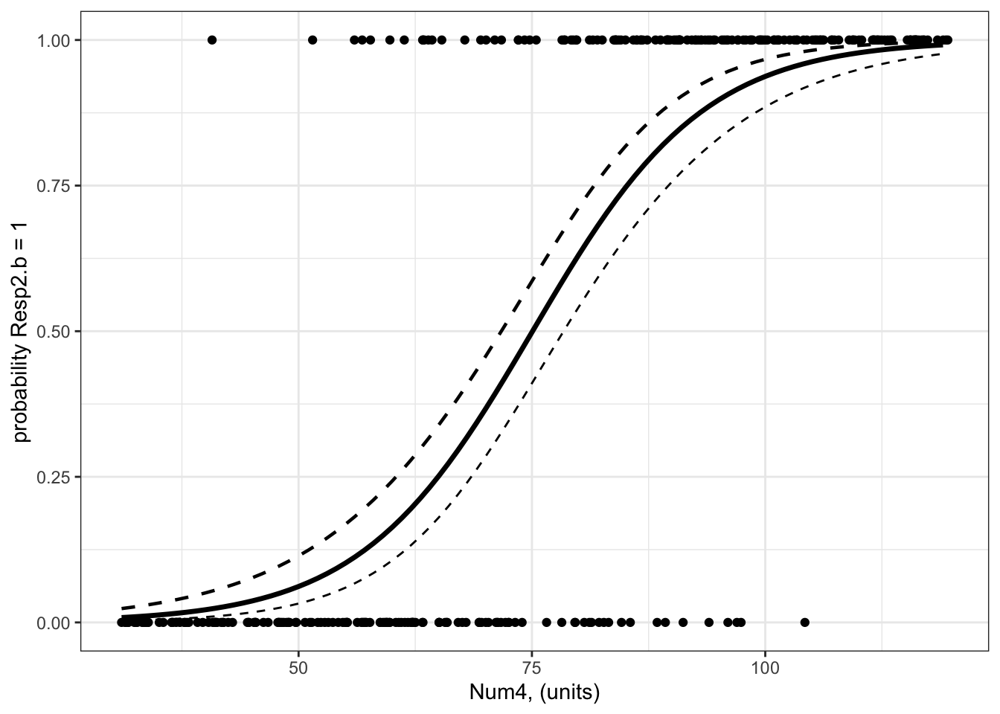
The model fit line may seem a little strange as the data are binary (can only be 0 or 1) but the model fit line goes through the space in between 0 and 1. This model fit line tells you how the probability of Resp3.b being 1 changes as Num4 changes.
What are your modelled effects (with uncertainty)?
trendsOut <-emtrends(bestMod3.b,specs =~ Num4 +1, # your predictorsvar ="Num4") # your predictor of interesttrendsOut
Note that this is the same estimate as you find in the summary() output of your model object:
coef(summary(bestMod3.b))
Estimate Std. Error z value Pr(>|z|)
(Intercept) -8.1518996 0.89160247 -9.142976 6.075711e-20
Num4 0.1085946 0.01160302 9.359159 8.037377e-21
This is because emtrends() returns coefficients on the link scale.
To report the coefficients on a response scale, you need to consider your link function. Since you have a binomial error distribution assumption, you can convert the estimate made by emtrends() to the response scale with:
trendsOut.df <-data.frame(trendsOut) # convert trendsOut to a dataframeOR <-exp(trendsOut.df$Num4.trend) # get the coefficient on the response scaleOR
[1] 1.11471
You can also use the same conversion on the confidence limits of the modelled effect, for the upper:
OR.up <-exp(trendsOut.df$asymp.UCL) # get the upper confidence interval on the response scaleOR.up
[1] 1.140351
and lower 95% confidence level:
OR.low <-exp(trendsOut.df$asymp.LCL) # get the lower confidence interval on the response scaleOR.low
[1] 1.089646
This coefficient - called the odds ratio (?@sec-startBinomial) - tells you that for a unit change in Num4, the odds that Resp3.b is 1 increases by 1.115 times (95% confidence interval is 1.09 to 1.14) which is an increase in the odds of Resp3.b being 1 of 11.5%.
where did this odds ratio come from?
You can get a better sense of the odds ratio (vs. odds vs. probabilities) by estimating it directly from the modelled probability that Resp3.b is 1:
Let’s find the probability of Resp3.b = 1 when Num4 is 60:
pNum4.60<-predict(bestMod3.b, # modelnewdata =data.frame(Num4 =60), # predictor values for the predictiontype ="response", # give prediction on the response scalese.fit =TRUE) # include uncertaintypNum4.60<- pNum4.60$fitpNum4.60
1
0.1629792
So there is a 16.3% probability of Resp3.b being 1 when Num4 is 60.
The odds associated with Resp3.b being 1 when Num4 is 60 is given by the probability of Num4 is divided by the probability of absence:
oddsNum4.60<- pNum4.60/(1-pNum4.60)oddsNum4.60
1
0.1947134
Now let’s find the probability of Resp3.b being 1 when Num4 is 61 (one unit more):
pNum4.61<-predict(bestMod3.b, # modelnewdata =data.frame(Num4 =61), # predictor values for the predictiontype ="response", # give prediction on the response scalese.fit =TRUE) # include uncertaintypNum4.61<- pNum4.61$fitpNum4.61
1
0.1783404
So there is a 17.8% probability of Resp3.b being 1 when Num4 is 61.
The odds associated with Resp3.b being 1 when Num4 is 61 is given by the probability of presence divided by the probability of absence:
oddsNum4.61<- pNum4.61/(1-pNum4.61)oddsNum4.61
1
0.217049
Now the odds ratio is found by comparing the change in odds when your predictor (Num4) changes one unit
oddsNum4.61/oddsNum4.60
1
1.11471
Note that this is identical to the calculation of the odds ratio from the coefficient above:
OR
[1] 1.11471
and you interpret this as a OR - 1 or 11.5% change in the odds of Resp3.b being 1 with a unit change of Num4.
Are the modelled effects different than one another across categorical levels? (only needed for categorical predictors with more than two levels)
This question only applies to categorical predictors of which their are none in Example 3.
Example 4: Resp4.b ~ Cat5 + Num6 + Cat5:Num6 + 1
Example 4: Resp4.b ~ Cat5 + Num6 + Cat5:Num6 + 1
Recall that Example 4 contains two predictors, one is categorical and one is numeric:
Resp4.b ~ Cat5 + Num6 + Cat5:Num6 + 1
The best-specified model (now with a binomial error distribution assumption) is:
#### i) choosing the values of your predictors at which to make a prediction# Set up your predictors for the visualized fitforCat5<-unique(myDat4.b$Cat5) # all levels of your categorical predictorforNum6<-seq(from =min(myDat4.b$Num6), to =max(myDat4.b$Num6), by =1)# a sequence of numbers in your numeric predictor range# create a data frame with your predictorsforVis<-expand.grid(Cat5 = forCat5, Num6 = forNum6) # expand.grid() function makes sure you have all combinations of predictors. #### ii) using `predict()` to use your model to estimate your response variable at those values of your predictor# Get your model fit estimates at each value of your predictorsmodFit<-predict(bestMod4.b, # the modelnewdata = forVis, # the predictor valuestype ="link", # here, make the predictions on the link scale and we'll translate the back belowse.fit =TRUE) # include uncertainty estimateilink <-family(bestMod4.b)$linkinv # get the conversion (inverse link) from the model to translate back to the response scaleforVis$Fit<-ilink(modFit$fit) # add your fit to the data frameforVis$Upper<-ilink(modFit$fit +1.96*modFit$se.fit) # add your uncertainty to the data frame, 95% confidence intervalsforVis$Lower<-ilink(modFit$fit -1.96*modFit$se.fit) # add your uncertainty to the data frame#### iii) use the model estimates to plot your model fitlibrary(ggplot2) # load ggplot2 libraryggplot() +# start ggplotgeom_point(data = myDat4.b, # add observations to your plotmapping =aes(x = Num6, y = Resp4.b, col = Cat5)) +# control position of data points so they are easier to see on the plotgeom_line(data = forVis, # add the modelled fit to your plotmapping =aes(x = Num6, y = Fit, col = Cat5),linewidth =1.2) +# control thickness of linegeom_line(data = forVis, # add uncertainty to your plot (upper line)mapping =aes(x = Num6, y = Upper, col = Cat5),linewidth =0.4, # control thickness of linelinetype =2) +# control style of linegeom_line(data = forVis, # add uncertainty to your plot (lower line)mapping =aes(x = Num6, y = Lower, col = Cat5),linewidth =0.4, # control thickness of linelinetype =2) +# control style of lineylab("probability Resp2.b = 1")+# change y-axis labelxlab("Num6, (units)") +# change x-axis labellabs(fill="Cat5, (units)", col="Cat5, (units)") +# change legend titletheme_bw() # change ggplot theme
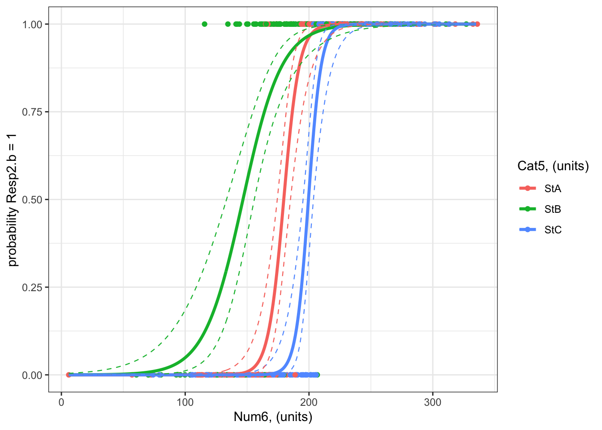
What are your modelled effects (with uncertainty)?
The process for estimating effects of categorical vs. numeric predictors is different.
For categorical predictors (Cat5), you can use emmeans() to give you the effects on the response scale directly:
emmOut <-emmeans(object = bestMod4.b, # your modelspecs =~ Cat5 + Num6 + Cat5:Num6 +1, # your predictorstype ="response") # report coefficients on the response scaleemmOut
Cat5 Num6 prob SE df asymp.LCL asymp.UCL
StA 198 0.951 0.0346 Inf 0.819 0.988
StB 198 0.964 0.0178 Inf 0.907 0.986
StC 198 0.438 0.0941 Inf 0.269 0.622
Confidence level used: 0.95
Intervals are back-transformed from the logit scale
This output tells you that:
When Cat5 is StA and Num6 is 227 units25, there is a 95% probability that Resp4.b will be 1 (95% confidence interval: 0.82 to 0.99%)
When Cat5 is StB and Num6 is 227 units26, there is a 96% probability that Resp4.b will be 1 (95% confidence interval: 0.91 to 0.99 units).
When Cat5 is StB and Num6 is 227 units27, there is a 44% probability that Resp4.b will be 1 (95% confidence interval: 0.27 to 0.62 units).
Note that emmeans() sets your numeric predictor (Num6) to the mean value of Num6 (227 units). You can also control this with the at = argument in the emmeans() function:
emmOut <-emmeans(object = bestMod4.b, # your modelspecs =~ Cat5 + Num6 + Cat5:Num6 +1, # your predictorstype ="response", # report coefficients on the response scaleat =list(Num6 =150)) # control the value of your numeric predictor at which to make the coefficient estimatesemmOut
Cat5 Num6 prob SE df asymp.LCL asymp.UCL
StA 150 8.93e-03 0.009230 Inf 1.17e-03 0.06500
StB 150 5.53e-01 0.078500 Inf 3.99e-01 0.69695
StC 150 6.27e-05 0.000142 Inf 7.00e-07 0.00524
Confidence level used: 0.95
Intervals are back-transformed from the logit scale
For numeric predictors (Num6), you need to use the emtrends() function and then convert the coefficients to the response scale:
trendsOut <-emtrends(bestMod4.b,specs =~ Cat5 + Num6 + Cat5:Num6 +1 , # your predictorsvar ="Num6") # your predictor of interesttrendsOut
Since you have a binomial error distribution assumption, you can convert the estimate made by emtrends() on to the response scale with the exp() function:
trendsOut.df <-data.frame(trendsOut) # convert trendsOut to a dataframeOR <-exp(trendsOut.df$Num6.trend) # get the coefficient on the response scaleOR
[1] 1.172328 1.065611 1.215576
You can also use the same conversion on the confidence limits of the modelled effect, for the upper:
OR.up <-exp(trendsOut.df$asymp.UCL) # get the upper confidence interval on the response scaleOR.up
[1] 1.250737 1.089631 1.325976
and lower 95% confidence level:
OR.low <-exp(trendsOut.df$asymp.LCL) # get the lower confidence interval on the response scaleOR.low
[1] 1.098834 1.042120 1.114368
Let’s organize these numbers so we can read the effects easier:
ORAll <-data.frame(Cat5 = trendsOut.df$Cat5, # include info on the Cat5 levelOR =exp(trendsOut.df$Num6.trend), # the modelled effect as a rate ratioOR.up =exp(trendsOut.df$asymp.UCL), # upper 95% confidence level of the modelled effectOR.down =exp(trendsOut.df$asymp.LCL)) # lower 95% confidence level of the modelled effectORAll
Cat5 OR OR.up OR.down
1 StA 1.172328 1.250737 1.098834
2 StB 1.065611 1.089631 1.042120
3 StC 1.215576 1.325976 1.114368
This tells you that for a unit change in Num6, the odds that Resp4.b is 1:
increases by 17.2% with a unit change in Num6 when Cat5 is StA (95% confidence interval: 9.9 to 25.1).
increases by 6.6% with a unit change in Num6 when Cat5 is StB (95% confidence interval: 4.2 to 9).
increases by 21.6% with a unit change in Num6 when Cat5 is StC (95% confidence interval: 11.4 to 32.6).
You can test for evidence that the effects of Num6 on Resp4.b are significant (different than zero) with:
test(trendsOut) # get test if coefficient is different than zero.
Note that these tests are done on the link scale but can be used for reporting effects on the response scale.
From the results, you can see that the effects of Num6 on Resp4.b at all levels of Cat5 are significant (P < 0.0001).
Are the modelled effects different than one another across categorical levels? (only needed for categorical predictors with more than two levels)
You can also find out which effects of Num6 on Resp4.b are different from one another using pairs() on the emtrends() output:
forCompOR <-pairs(trendsOut, # emmeans objectadjust ="fdr", # multiple comparison adjustmentsimple ="Cat5") # contrasts within this categorical predictorforCompOR
Num6 = 198:
contrast estimate SE df z.ratio p.value
StA - StB 0.0954 0.0349 Inf 2.732 0.0094
StA - StC -0.0362 0.0553 Inf -0.655 0.5124
StB - StC -0.1317 0.0458 Inf -2.876 0.0094
P value adjustment: fdr method for 3 tests
The table above tells you that:
There is evidence that the effect of Num6 on Resp4.b is different when Cat5 is StA vs. StB (P = 0.009). The effect of Num6 on Resp4.b is exp(0.0954) = 1.1 times as big when Cat5 is StA vs. StB (i.e. the effect of Num6 on Resp4.b is 10% more when Cat5 is StA vs. StB)
There is no evidence the effect of Num6 on Resp4.b differs when Cat5 is StA vs. StC (P = 0.512).
There is evidence that the effect of Num6 on Resp4.b is different when Cat5 is StB vs. StC (P = 0.009). The effect of Num6 on Resp4.b is exp(-0.1317) = 0.88 times as big when Cat5 is StB vs. StC (i.e. the effect of Num6 on Resp4.b is 12% less when Cat5 is StB vs. StC)
Only if all the slopes28 were similar, you would want to test if the levels of your categorical predictor (Cat5) have significantly different coefficients (intercepts) from each other with pairs() on the output from emmeans() (the emmOut object).
Arel-Bundock, Vincent, Noah Greifer, and Andrew Heiss. 2024. “How to Interpret Statistical Models Using marginaleffects for R and Python.”Journal of Statistical Software 111 (9): 1–32. https://doi.org/10.18637/jss.v111.i09.
“post hoc” is a Latin phrase meaning “after the event”↩︎
note that the p-values reported in the coefficient table are the result of a test of whether the coefficient associated with Sp2 is different than that of Sp1 (p = 0.001), and if the effect of Sp3 is different than that of Sp1 (p = 0.017)), but a comparison of effects of Sp2 vs. Sp3 is missing. We will discuss this more further along in these notes.↩︎
another option is the marginaleffects package, where marginal effects represent the average effect - the average difference in your predicted response across a change in your categorical predictor level or a unit change in your numeric predictor(Arel-Bundock, Greifer, and Heiss 2024)↩︎
note that the summary() output becomes easier to read if you force the starting model not to have an intercept with: startMod<-glm(formula = Resp1 ~ Cat1 - 1, data = myDat, family = gaussian(link="identity")). This is fine to do here where you only have categorical predictors but causes problems when you start having numeric predictors in your model as well. So we won’t be practicing this in class and instead will use the very flexible and helpful emmeans package to help us report coefficients from our statistical models.↩︎
when the P-value is very low, R reports is as simple < 0.0001↩︎
note that now you get to assess the difference between coefficients for Sp2 and Sp3 which was missing in the summary() output above↩︎
The emmeans package is very flexible and has a lot of options as to how to make these corrections depending on your needs. Plenty more information is available here↩︎
also called the incidence rate ratio, incidence density ratio or relative risk↩︎
a reminder that the number e that the function exp() uses as its base is Euler’s number. It (along with the natural logarithm, log()) is used to model exponential growth or decay, and can be used here when you want models where the response can not be below zero.↩︎